SIENA, NIPS-CERN, UFJF
Limiar
Redes neurais, do neurônio ao fractal
Aula 6: o MNIST em NumPy, com treino, validação e teste
27/11/2026. C∴ Chrysthofer A. A. Afonso
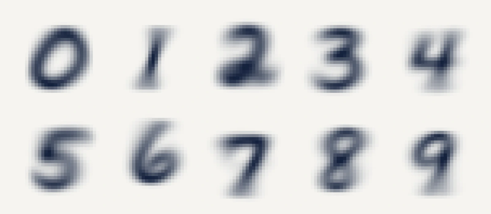
O dígito médio de cada classe: a média, pixel a pixel, dos cerca de 5 mil exemplos de treino de cada dígito. Fica borrado porque cada pessoa escreve de um jeito, e a média junta todos os traços.
Limiar, aula 6: o MNIST em NumPy


1 · Revisão
O que ficou das aulas 4 e 5, de memória
1
O que o Jacobiano de uma camada guarda?
2
Por que o produto dos Jacobianos se calcula de trás para a frente?
3
O que é o δ de um neurônio?
4
Como se confere um gradiente?
Limiar, aula 6: o MNIST em NumPy
1 · Revisão
O fio do curso, da aula 1 à 10
1
O neurônio e o perceptron
um neurônio desenha uma reta, e nenhuma reta separa o XOR
25/09, presencial
2
Derivada e gradiente
o passo contra a derivada; a taxa grande demais faz o treino divergir
02/10, presencial
3
Matrizes e camadas
duas camadas separam o XOR, com pesos escolhidos à mão
13/11, on-line
4
O Jacobiano
a regra da cadeia com vetores, uma camada de cada vez
13/11, on-line
5
Retropropagação
a regra da cadeia, de trás para a frente, acha os pesos do XOR
13/11, on-line
6
O MNIST em NumPy
um MLP em 70 mil dígitos escritos à mão, com treino, validação e teste
27/11, on-line
7
PyTorch
a biblioteca faz a retropropagação; o erro final contra a taxa
27/11, on-line
8
Os dados do CERN
um MLP estima a massa dos dois múons, conferida pela fórmula
04/12, on-line
9
O fractal e o projeto
a fronteira entre a taxa que converge e a que diverge
04/12, on-line
10
A apresentação
a apresentação do projeto e a revisão do curso inteiro
11/12, on-line
Limiar, aula 6: o MNIST em NumPy
2 · O MNIST e a rede
O MNIST: 70 mil dígitos escritos à mão
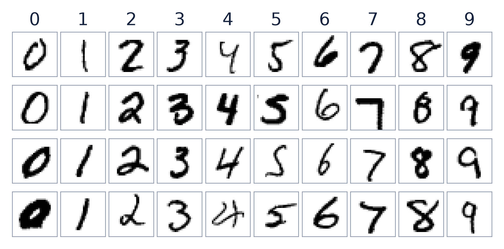
60 mil + 10 mil
dígitos de treino e de teste, de 0 a 9
28 × 28
pixels por imagem, 784 ao todo
0 a 1
o tom de cada pixel: de 0 a 255 no arquivo, dividido por 255
Classe, no curso: cada resposta possível, aqui os dez dígitos. Rótulo: a classe certa de um exemplo, que vem junto com a imagem.
Limiar, aula 6: o MNIST em NumPy
2 · O MNIST e a rede
Do dígito às dez probabilidades
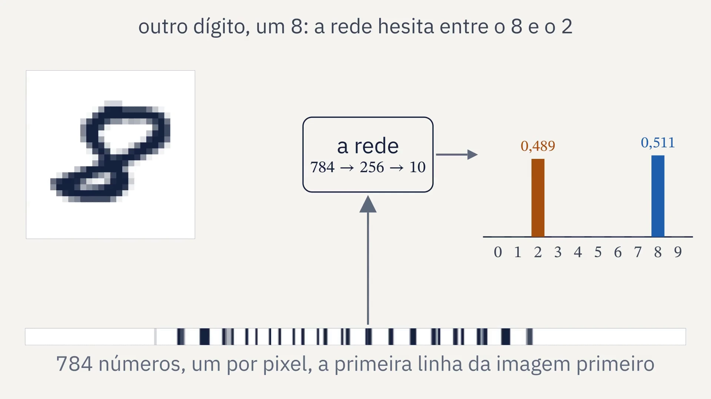
Limiar, aula 6: o MNIST em NumPy
2 · O MNIST e a rede
A rede: 784, 256, 10
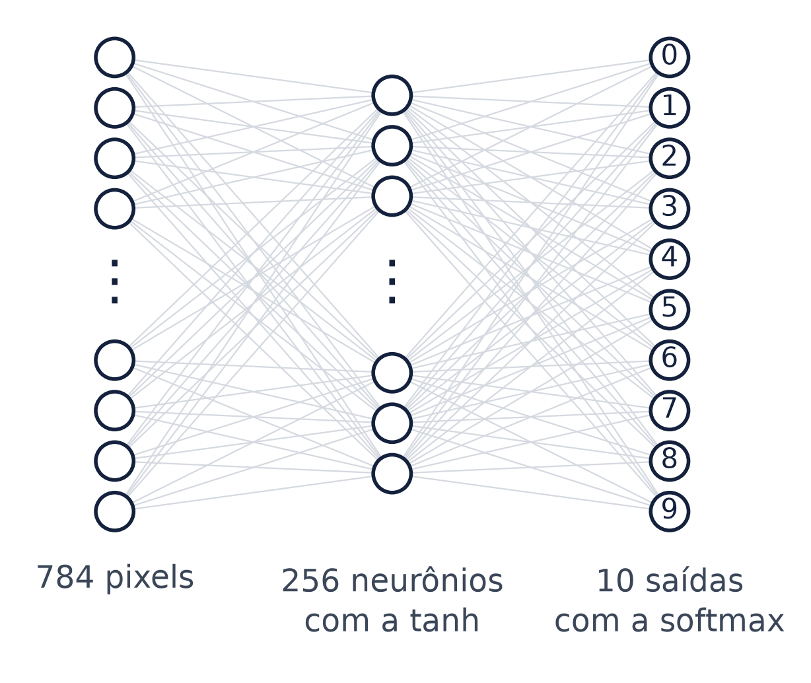
203.530
números a ajustar; a rede do XOR tinha nove
Limiar, aula 6: o MNIST em NumPy
2 · O MNIST e a rede
A softmax: dez números viram dez probabilidades
e, o número 2,718..., a base da exponencial
Com três números
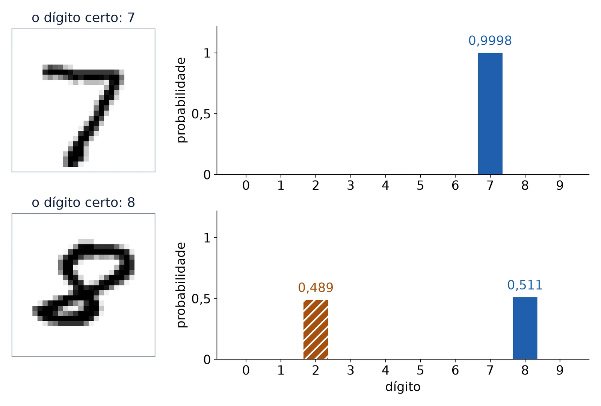
Limiar, aula 6: o MNIST em NumPy
2 · O MNIST e a rede
A softmax por dentro
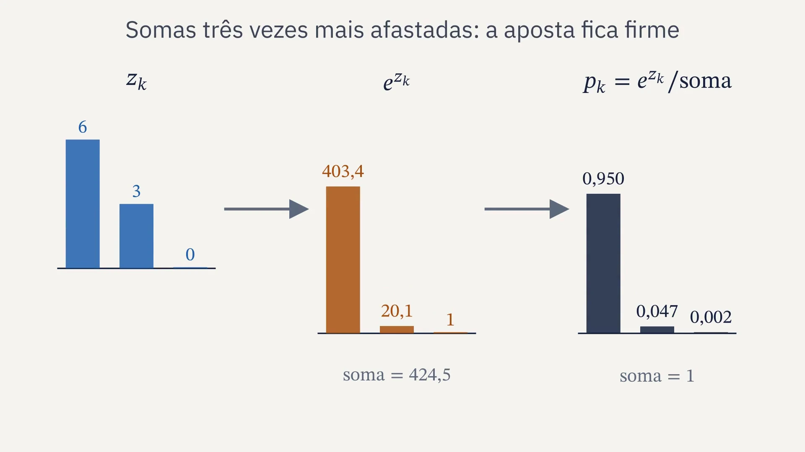
Limiar, aula 6: o MNIST em NumPy
2 · O MNIST e a rede
A entropia cruzada, a perda da classificação
ln, o logaritmo natural, a inversa da exponencial
pt: a probabilidade que a rede deu ao dígito certo, t.
Num lote de N exemplos, a média
0,99
0,010
0,9
0,105
0,5
0,693
0,1
2,303
0,01
4,605
Limiar, aula 6: o MNIST em NumPy
2 · O MNIST e a rede
A retropropagação da aula 5, com duas trocas
Na saída, com a softmax
o vetor y: 1 na posição do dígito certo e 0 nas outras
Caixa-preta: a regra da cadeia através da softmax. A conta está em Goodfellow, Bengio e Courville, 2016, capítulo 6.
Na camada oculta, a tanh
a inclinação da tanh, da aula 4, no lugar da da sigmoide
retropropagação contra derivada numérica, em 30 pesos sorteados
Limiar, aula 6: o MNIST em NumPy
2 · O MNIST e a rede
O gradiente em lotes de 64
64
exemplos por lote, sorteados a cada época
782
passos por época: 781 lotes de 64 e um de 16
0,1
a taxa η, por 20 épocas
Época, no curso: uma passada por todos os 50 mil exemplos de treino. Lote: um grupo de exemplos que dá um passo do gradiente.
Limiar, aula 6: o MNIST em NumPy
3 · Treino, validação e teste
A rede aprendeu ou decorou?
No treino, ela chega a 99,21% de acertos. O que conta é o dígito que ela nunca viu.
Limiar, aula 6: o MNIST em NumPy
3 · Treino, validação e teste
Treino, validação e teste
50.000
Treino
ajusta os pesos
10.000
Validação
escolhe a largura e a hora de parar; nunca ajusta peso
10.000
Teste
mede a rede escolhida, uma vez, no fim
treino
validação
teste
A validação sai do treino original do MNIST: 10 mil dos 60 mil, sorteados com a semente 0. O teste fica como veio. Acurácia: a fração de acertos.
Limiar, aula 6: o MNIST em NumPy
3 · Treino, validação e teste
Treino e validação, época a época
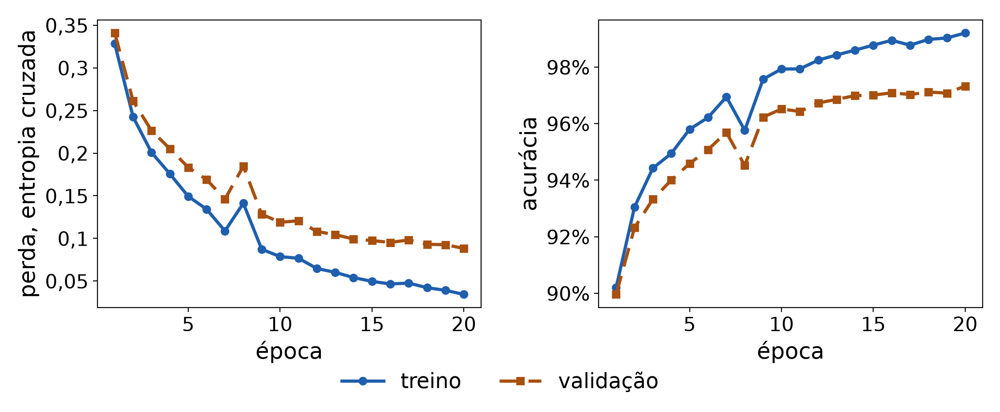
Na época 20: 99,21% no treino e 97,33% na validação. A validação ainda melhora: a melhor época é a última.
Limiar, aula 6: o MNIST em NumPy
3 · Treino, validação e teste
Com mil exemplos, a rede decora
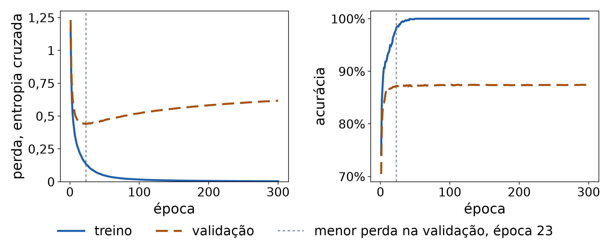
Treino: 100%. Validação: 87,42%, com a perda mínima na época 23. Sobreajuste: a rede decora o treino e erra no dado novo.
Limiar, aula 6: o MNIST em NumPy
3 · Treino, validação e teste
A validação escolhe a largura
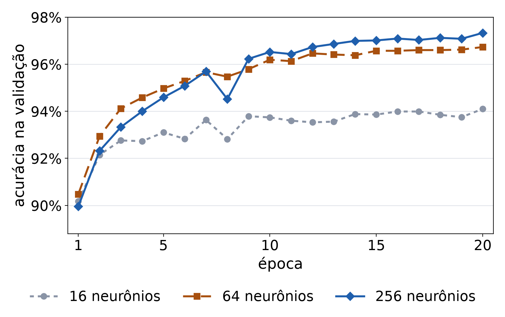
neurônios
validação
tempo
16
94,10%
4 s
64
96,73%
9 s
256
97,33%
102 s
Todas na melhor época, a 20, com a mesma semente. O tempo é o do laptop do professor. Nenhum número olhou o teste.
Limiar, aula 6: o MNIST em NumPy
3 · Treino, validação e teste
O teste, medido uma vez
97,59%
de acertos nos 10 mil dígitos de teste: 241 erros
semente 1, versão dos dados 227111746c19, 256 neurônios, época 20
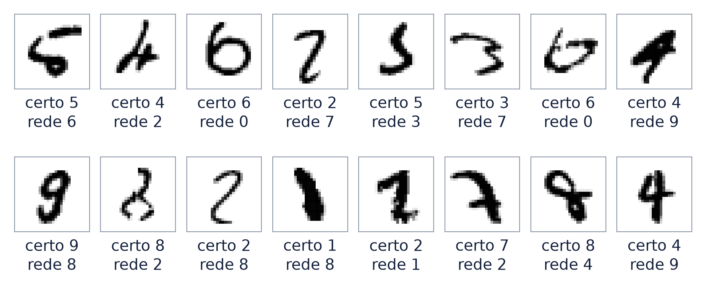
Os 16 primeiros erros, na ordem do teste.
Limiar, aula 6: o MNIST em NumPy
3 · Treino, validação e teste
Que dígitos a rede confunde
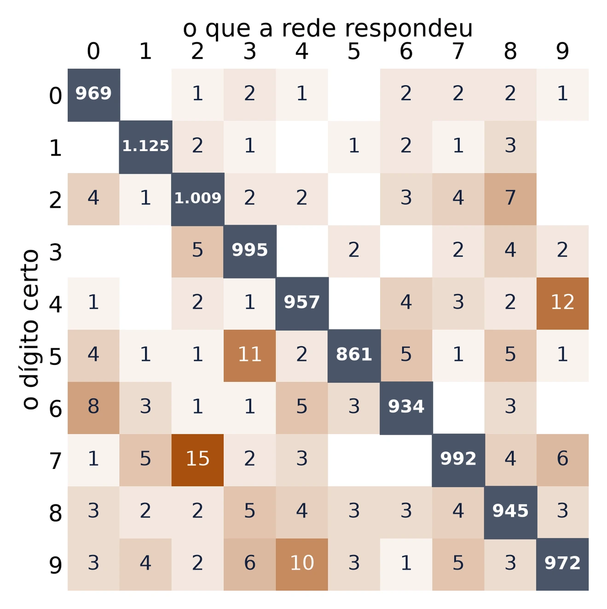
Os pares mais confundidos
- 15 setes respondidos como 2
- 12 quatros como 9
- 11 cincos como 3
- 10 noves como 4
Por dígito
- o 9 acerta menos: 96,3%
- o 1 acerta mais: 99,1%
Limiar, aula 6: o MNIST em NumPy
3 · Treino, validação e teste
O que os neurônios ocultos procuram
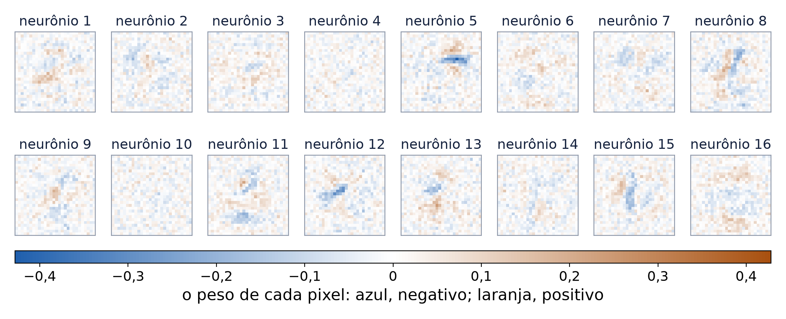
Cada neurônio tem um peso por pixel. Laranja: tinta ali aumenta a soma; azul: diminui. Alguns procuram traços; outros parecem ruído.
Limiar, aula 6: o MNIST em NumPy
3 · Treino, validação e teste
Um neurônio oculto diante de uma imagem
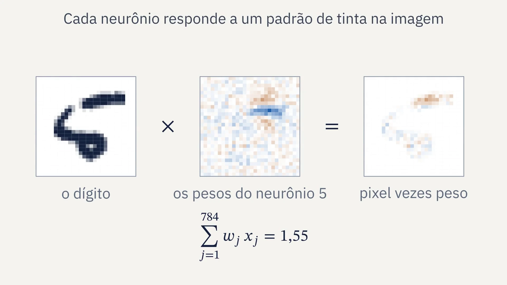
Limiar, aula 6: o MNIST em NumPy
4 · De onde vem
1998: o MNIST e a LeNet-5
- o NIST, o Instituto Nacional de Padrões e Tecnologia dos Estados Unidos, tinha duas bases: a SD-3, de funcionários do censo, e a SD-1, de estudantes do ensino médio
- o MNIST, Modified NIST, mistura as duas: 30 mil de cada no treino, 5 mil de cada no teste, com escritores diferentes
- 2018: o Prêmio Turing para Bengio, Hinton e LeCun
rede
erro no teste
MLP, 300 ocultos, 1998
4,7%
LeNet-5, convolucional, 1998
0,95%
MLP, 256 ocultos, esta aula
2,41%
Rede convolucional: cada neurônio olha uma janela pequena da imagem, com os mesmos pesos em toda parte; fica fora do curso.
Yann LeCun, primeiro autor do artigo de 1998, em 2025. Foto da École polytechnique, Wikimedia Commons, CC BY-SA 2.0.
Fontes: LeCun, Bottou, Bengio e Haffner, 1998, Proceedings of the IEEE; a página do MNIST; ACM, Prêmio Turing de 2018.
Limiar, aula 6: o MNIST em NumPy
5 · O código
O MLP em NumPy, passo a passo
1
mnist.py lê os arquivos, divide por 255 e separa a validação
2
A passada para a frente: tanh na camada oculta, softmax na saída
3
A retropropagação, conferida pela derivada numérica antes de treinar
4
O laço dos lotes, com a perda e a acurácia de cada época
5
O teste uma vez; a semente, a versão e os números em resultados/mlp.json
O NumPy que resolve
np.exp(Z - Z.max(axis=1, keepdims=True))
P[np.arange(N), t]
rng.permutation(len(X))
P.argmax(axis=1) == t
com X, os exemplos do lote, um por linha
Limiar, aula 6: o MNIST em NumPy
5 · O código
O que a entrega pede
Recebe
mnist.py
carrega os dados
esqueleto.py
o treino pronto e o gráfico
Escreve
softmax
para_a_frente
retropropagacao
Entrega
- a acurácia no teste
- a semente e a versão dos dados
- as curvas de treino e de validação
Antes de treinar, o esqueleto confere a retropropagação pela derivada numérica e para se a diferença passar de 10−5.
Limiar, aula 6: o MNIST em NumPy
6 · Fechamento
Para estudar e entregar
Estudo
- PyTorch, “Learn the Basics”
- Karpathy, “building micrograd”, 2022
- Kingma e Ba, o Adam: só o quadro do algoritmo
Entrega
- o MLP do esqueleto, com a acurácia no teste, a semente e a versão
- as curvas de treino e de validação
- uma pergunta sobre o estudo
A seguir
- aula 7: a mesma rede em PyTorch, e o erro final contra a taxa
- aula 8: os dados do CERN
Limiar, aula 6: o MNIST em NumPy